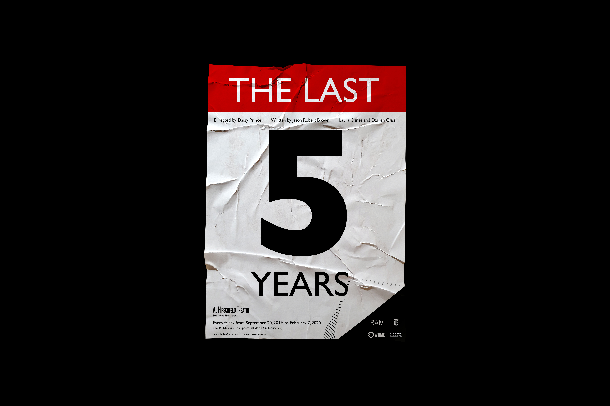

El 19 de Septiembre de 2018 un sismo devastó gran parte de la Ciudad de
México, Oaxaca y Morelos, sembrando desolación en la población.
En este proyecto se estudia el movimiento de este trágico acontecimiento,
tanto del suelo como de las personas y los objetos tales como sillas,
lámparas, etc., para posteriormente abstraerse y crear 16 composiciones en
forma de trama que mediante el movimiento de un acetato sobre secuencias
de imágenes genera la ilusión óptica del movimiento.
Hecatombe es una publicación interactiva con un tiraje de 3 ejemplares que
narra por medio de movimientos abstractos, todo lo que se vivió el día del
hecatombe en orden cronológico. El color es un elemento fundamental para
esta publicación ya que genera una estado de alerta, para esto se utiliza
un papel color rosa fluorescente inspirado en el color de mayor intensidad
en la escala Shindo.